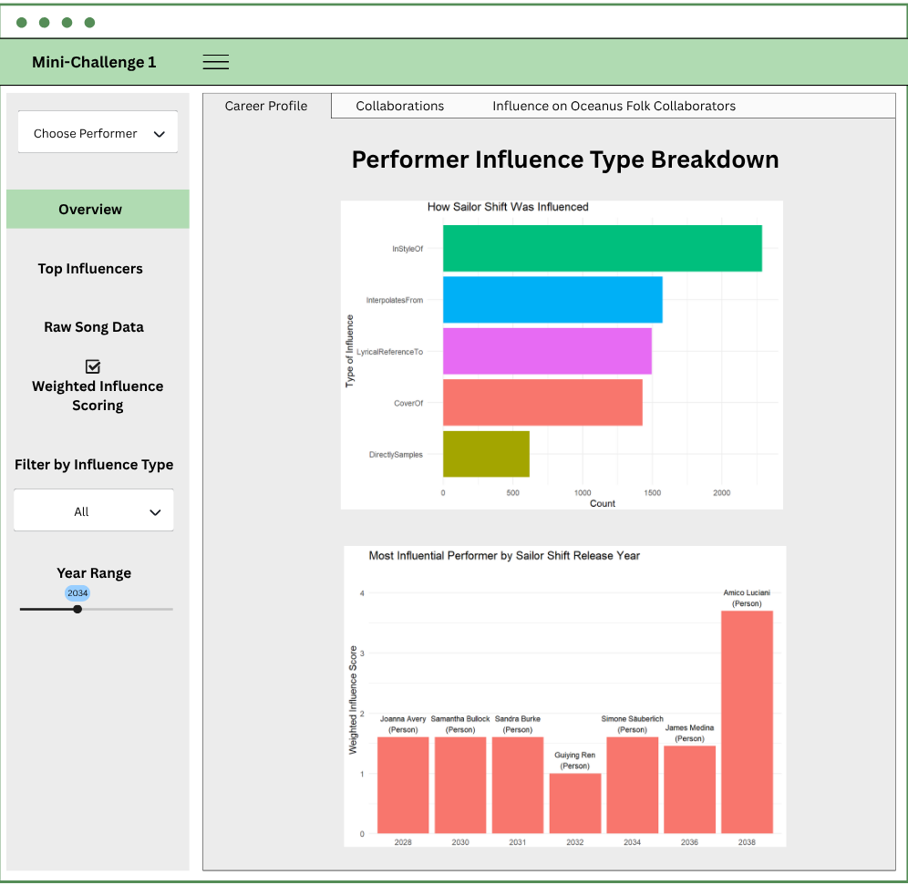
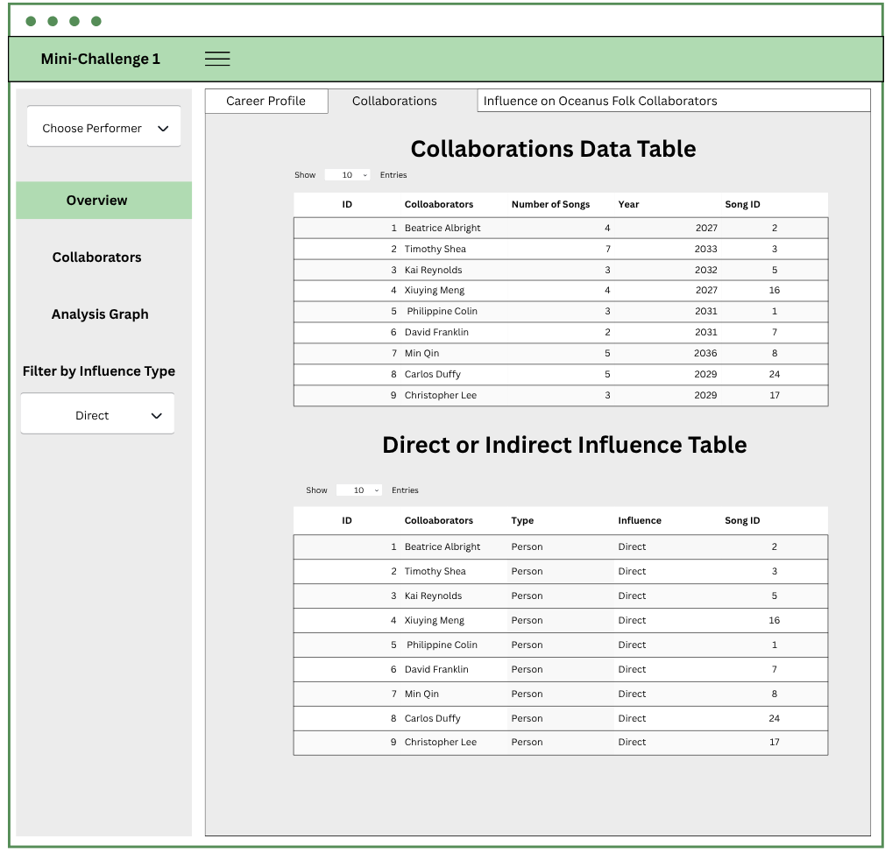
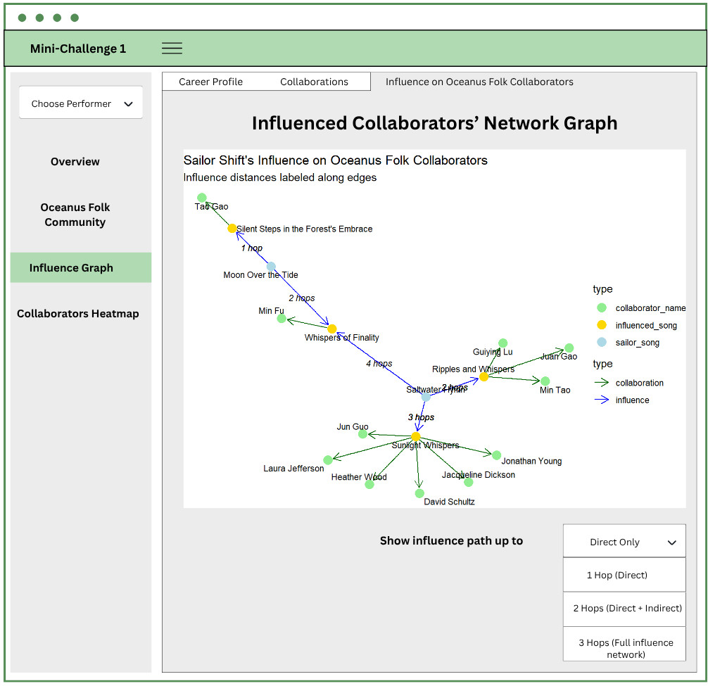
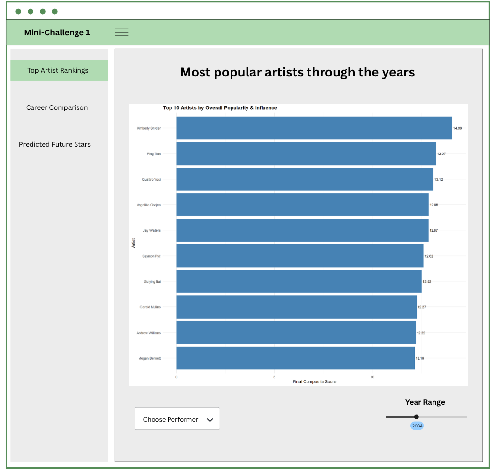
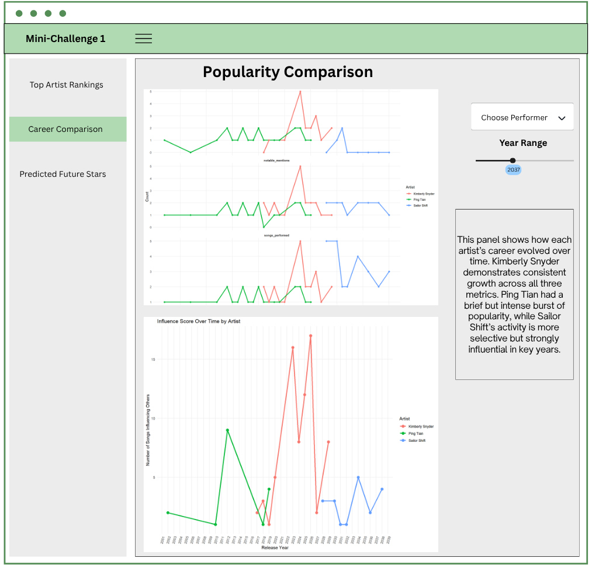
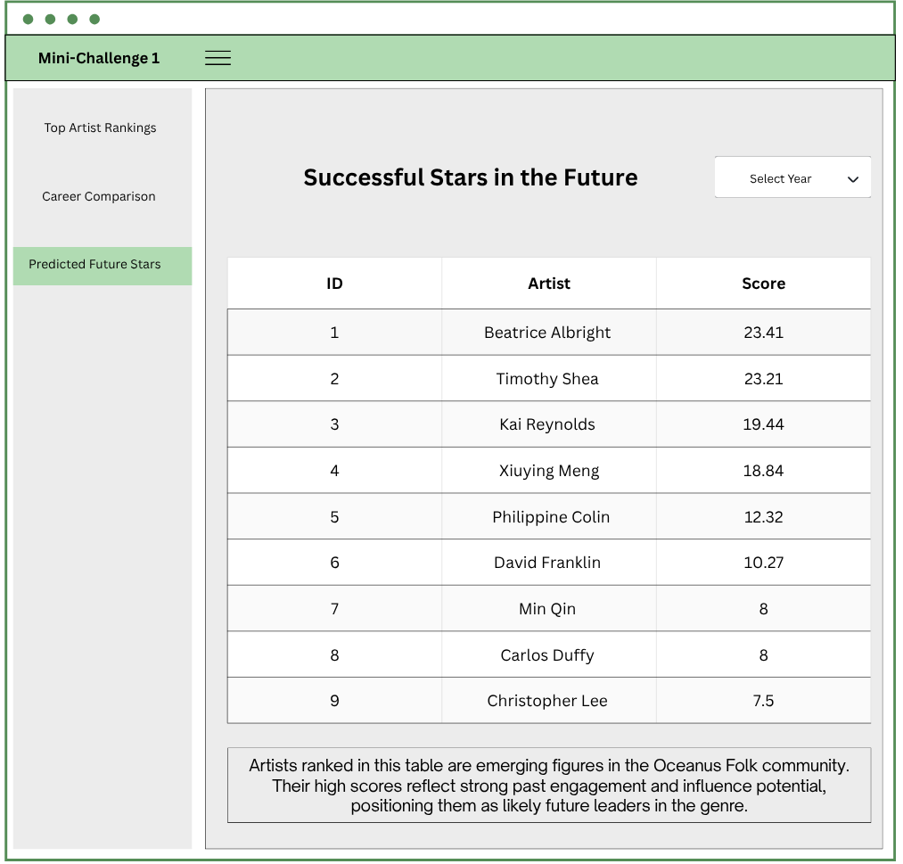

Take-home Exercise 3
Our Storyboard
Introduction
This storyboard serves as a visual and narrative walkthrough of the user interface (UI) design and analytical features embedded within our Shiny dashboard prototype. It bridges the gap between the data-driven research on Sailor Shift’s musical influence and the user’s interactive experience.
The purpose of the storyboard is twofold:
To illustrate how different UI components guide the user through data exploration.
To explain how specific visualizations, filters, and graphs contribute to uncovering insights about collaborations and influence patterns in the Oceanus Folk music scene.
The dashboard has been thoughtfully structured around three key analytical perspectives:
Influence Overview – exploring how Sailor Shift was influenced throughout her career.
Collaborators Table View – examining who she worked with and who she later influenced.
Influence Network Graph – mapping the spread of her artistic impact across multiple degrees of separation.
Each section of the storyboard includes:
A screenshot of the relevant UI screen
Interactive elements and filters explained with annotations
Interpretation panels to guide the user in drawing insights from the visualizations
This design-centric documentation ensures transparency and clarity in how the dashboard communicates complex relational data, and offers a clear foundation for users to explore Sailor Shift’s legacy in a meaningful, structured way.
Section 1 – Influence Overview
Performer Influence Type Breakdown
This tab introduces users to the different influence types that shaped Sailor Shift’s musical career over time.

The “Choose Performer” dropdown at the top of the sidebar allows users to select any artist in the dataset, not just Sailor Shift.
Once a performer is selected, all relevant visualizations and data tables across the dashboard update accordingly.
This includes:
The Influence Type Breakdown, which adjusts to show how the selected artist was influenced across five musical influence types.
The Yearly Top Influencer chart, which recalculates weighted influence scores specific to the chosen artist’s discography and timeline.
In other tabs, such as Collaborations and Influence Graph, the system traces collaborations and downstream influence for the selected performer, dynamically adapting the content of tables and networks.
This flexible feature ensures that the dashboard functions as a general-purpose career and influence analysis tool for any artist within the Oceanus Folk dataset, making it scalable, exploratory, and comparative.
Interactive Features:
A horizontal bar chart shows counts of influence types such as InStyleOf, CoverOf, DirectlySamples, etc.
Users can toggle Weighted Influence Scoring to factor in the rarity of each influence type.
Dropdown filter allows users to limit the chart to a specific influence type.
Most Influential Performer by Release Year
This component summarizes which performer had the greatest weighted influence on Sailor Shift for each release year.
Features:
A vertical bar chart ranks top influencers across time.
Labels within each bar display both the influencer’s name and their node type (e.g., person, group).
Year Range slider (left sidebar) lets users restrict the visualization to specific time periods.
Section 2 – Collaborator Table View
Collaborations Data Table
This tab shows artists who collaborated with Sailor Shift by co-performing songs.

Features:
An interactive data table displays: collaborator name, number of songs shared, first collaboration year, and song IDs.
Allows searching, sorting, and pagination.
Direct or Indirect Influence Table This component reveals which of those collaborators were also influenced by Sailor’s work.
Functionality:
Table includes: collaborator name, node type, type of influence (Direct), and associated song ID.
Left sidebar includes Filter by Influence Type, allowing users to isolate Direct vs Indirect influences.
Section 3 – Influenced Collaborators Network
Influenced Collaborators’ Network Graph
This tab visualizes how Sailor Shift’s songs have influenced Oceanus Folk collaborators across multiple steps of influence.

Network graph with three node types:
Sailor Shift’s songs (blue)
Influenced songs (yellow)
Collaborator names (green)
Edge styles:
Blue arrows represent musical influence
Green arrows represent song collaboration
Edge labels indicate the number of hops from Sailor’s song to the influenced collaborator.
Influence Path Filter
A dropdown below the graph allows users to adjust the depth of influence shown:
| Option | Description |
|---|---|
| Direct Only | Show only 1-hop direct influences |
| 2 Hops | Include 1 level of indirect influence |
| 3+ Hops | Full multi-hop influence tracing |
Overview Tab
The Overview tab provides a high-level summary of influence impact, helping users quickly identify which collaborators were musically shaped by Sailor Shift’s work.
This section includes:
A summary table displaying:
Collaborator name
The song of theirs that was influenced
The original Sailor Shift song
The number of hops (influence distance)
This overview supports exploratory understanding and highlights key influencers and intermediaries in Sailor’s artistic legacy.
Oceanus Folk Community Tab
This tab provides a structured data table of all recognized members of the Oceanus Folk community, defined by:
Their creative contributions (performance, composition, lyric, or production) to songs tagged as Oceanus Folk
Manual inclusion of key Ivy Echoes members (e.g., Maya Jensen, Lila Hartman, Jade Thompson, Sophie Ramirez)
Users can:
View artist name and node type
Search or filter the community list
Explore downstream connections in the other tabs
Collaborators Heatmap Tab
This tab displays a heatmap matrix that quantifies collaboration intensity between:
Top Oceanus Folk members (Y-axis)
Top Collaborators (X-axis)
Color intensity indicates the number of shared songs, making it easy to:
Detect tightly coupled artist pairs
Identify key collaborators across the community
Compare overlap patterns across roles and genres
Users can adjust:
Number of top artists shown (Top 10, Top 20)
Filters by role (Performer, Composer, etc.)
Section 4 – Popularity and Rising Stars Analysis
This section of the dashboard focuses on exploring the careers, comparative influence, and future potential of musical artists within the Oceanus Folk dataset. It is designed to help users identify what defines a “rising star” based on composite popularity metrics and influence trends.
Tab 1: Top Artist Rankings

This tab presents an interactive bar chart that ranks artists by their overall composite score, a combined metric based on:
Number of songs performed
Number of collaborations
Notable mentions (charts or awards)
Influence spread (songs influenced by their work)
UI Components:
Horizontal bar chart displays the top 10 artists with their final scores.
Users can adjust the Year Range slider (bottom right) to filter rankings by active career period.
A Choose Performer dropdown (bottom left) allows users to select an artist and drill down further in the subsequent tabs.
Tab 2: Career Comparison

This tab uses time-series visualizations to compare how Sailor Shift, Kimberly Snyder, and Ping Tian evolved over time.
Sub-components:
Three faceted line charts display trends by year:
Songs Performed
Collaborations
Notable Mentions
A line graph shows influence score over time, capturing both direct and indirect musical influence (multi-hop paths).
A dynamic Year Range slider allows users to focus on specific time periods.
Choose Performer enables selection of another artist, enabling broader comparisons beyond the default three.
A Chart Interpretation Box is also built to help users understand the key takeaway from the visualization and provide guidance on how to interpret the chart elements.
Tab 3: Predicted Future Stars

This final tab highlights artists predicted to become influential within the Oceanus Folk scene, based on their current trajectory and composite score.
UI Features:
A ranked table shows the top predicted artist, sorted by final_score.
Columns: ID, Artist Name, Final Score
A Select Year dropdown enables users to simulate predictions by future periods or filter emerging talent pools dynamically.
A Chart Interpretation Box is also built to help users understand the key takeaway from the visualization and bridge the gap between raw data and analytical insight.